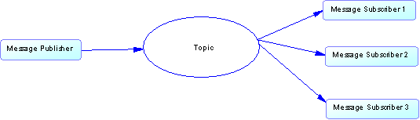
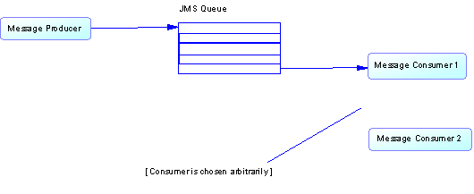

|
This Messaging API provides an additional level of abstraction of the underlying JMS messaging system so messages can be managed without any concern of the type of destination intended for the message or
the messaging domain employed to manage the message. JMS manages messages using two paradigms: publish-and-subscribe and point-to-point.
The two JMS domains mentioned above can be depicted as: Publish-and-Subscribe  Publisher components publish messages to a topic, and all subscriber components receive the message. Point-to-Point  Queue producers place messages on a queue, while consumers listen for, and remove the messages from a queue. This API uses inheritance, encapsulation, and polymorphism to ensure that the main components of the messaging system (producers, consumers, and messages) can seamlessly and successfully operate in either JMS domain without the developer needing to provide specific deterministic logic to do so. One of the main purposes of this framework is to further abstract the implementation details of the underlying JMS API. This includes:
Another purpose is to maintain the principle of the underlying JMS API, which is devising a single body of code that can publish a message to a Topic or place a message on a queue without specifically including logic that will make the distinction. The same is true for receiving messages. The message consumer is completely unaware of whether the message was published to a topic or placed on a queue when a message is received. When writing code to send and/or receive messages via this framework, the user is required to indicate the name of the destination when constructing message consumers and receivers. The framework will decipher what JMS domain to employ in order to ensure that message reaches its proper destination. In order for these events to occur, the user must be aware of and supply the name of the destination to the framework when setting up a message. Other functionality included in this framework includes adding selector predicates to messages, converting java objects to XML, and converting XML to java objects. Before any message consumers and producers can be created and used, this API requires that the messaging environment is setup and initialized accordingly. The API requires the usage of JNDI to allow a client to gain access to the JMS provider’s implementation. In order to establish a connection to the JMS provider, you must construct a Hashtable, populate it with certain values, and provide the Hashtable as a parameter to the JNDI method, InitialContext. The two important values are the InitialContextFactory property and the Provider URL property and these values should be set in the applications.properties as: jms.contextclass and jms.providerurl, respectively. For example,
jms.contextclass = com.ibm.mq.jms.context.WMQInitialContextFactory
jms.providerurl = wbm2-dev-1:1415/SYSTEM.ADMIN.SVRCONN
All of the above initialization logic is performed from within the framework when the method, initializeDestination(String destinationName), is called from an instance of one of the following classes, ClientProducer or ClientConsumer. ClientProducer is used for creating and managing message producers. ClientCosumer is used for creating and managing message consumers. Each of these classes contains specific functionality to manage the message it is intended to receive or send. How to Use Again, the main goal of ADM framework is to simplify the process of associating destinations with consumers and producers and to easily manage the message and its mode of delivery from within the consumer/producer. Whether a message is to be delivered synchronously or asynchronously, the developer must instantiate a consumer/producer before sending and receiving messages. These instances are considered to be the genesis of message management and delivery. Below are some basic code examples on how to send and receive messages synchronously and asynchronously. Consumer Example (Asynchronous or Synchronous)
String xmlMsg = “This is a message”;
// Create object for sending the request
ClientProducer producer = new ClientProducer();
try {
// identify the name of the queue you want to send message
String requestDest = “queue name”;
// This single line of code will obtain the connection, session, and lookup the destination named,
// requestDest for the message producer.
producer.initializeDestination(requestDest);
// Create the message from “xmlMsg”
producer.createMesasge(xmlMsg);
// Set message properties so that the consumer can filter incoming messages based on some criteria
producer.createMessageProperty(“company”, “YAHOO”);
producer.createMessageProperty(“company_type”, “internet”);
// Send the message
producer.postMessage();
}
catch (Exception e) {
throw new ServiceException(e);
}
finally {
// Ensure that allocated resources are released pertaining to the producer.
producer.close();
}
Setting up Asynchronous Consumer Example
// Create consumer for receiving requests
ClientConsumer consumer = new ClientConsumer();
try {
// identify the name of the queue you want to receive the response from the recipient of the original request.
String requestDest = “queue name”;
// Create the selector. This optional only if criteria is needs to be assoicated with the message.
String selector = “company = \“YAHOO\” and company_type = \”internet\” “;
// This single line of code will obtain the connection, session, and lookup the destination named,
// requestDest. This consumer is only interested in messages that belong to an inernet company
// known as “YAHOO”
consumer.initializeMessageQueue(requestDest, selector);
// Assign a listener to the consumer in order to receive messages asynchronously
consumer.setMessageListener(new CommonMessageListener());
// Start JMS connection, if applicable. An error will not occur if the connection is already started.
CommonGateway.startConnection();
}
catch (Exception e) {
throw new ServiceException(e);
}
Synchronous Messaging Example
String xmlMsg = “This is a message”;
// Create object for sending the request
ClientProducer producer = new ClientProducer();
try {
// identify the name of the queue you want to send message
String requestDest = “queue name”;
String replyDest = “queue name”;
// This single line of code will obtain the connection, session, and lookup the destination named,
// requestDest for the message producer.
producer.initializeDestination(requestDest);
// Create the message from “xmlMsg” and instruct where the reply should go.
producer.createRequestMesasge(xmlMsg, replyDestName, true);
// Set message properties so that the consumer can filter incoming messages based on some criteria
producer.createMessageProperty(“company”, “YAHOO”);
producer.createMessageProperty(“company_type”, “internet”);
// Send the message
producer.postMessage();
// Set the selector needed to retrieve the reply, if needed.
String replyCriteria = "some criteria that is to match the message property values of the reply";
producer.setReplySelector(replyCriteria);
// get the response by blocking indefintely until reply message is received
Serializable results = producer.getMessage(0);
}
catch (Exception e) {
throw new ServiceException(e);
}
finally {
// Ensure that allocated resources are released pertaining to the consumer and producer.
producer.close();
}
|